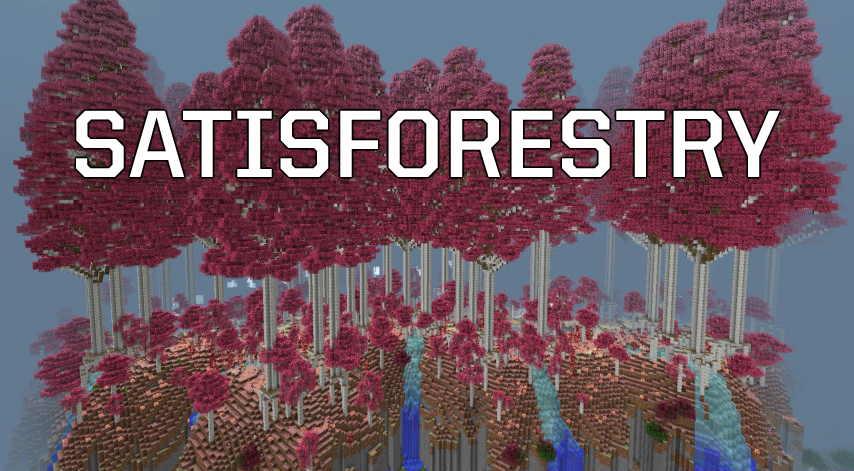
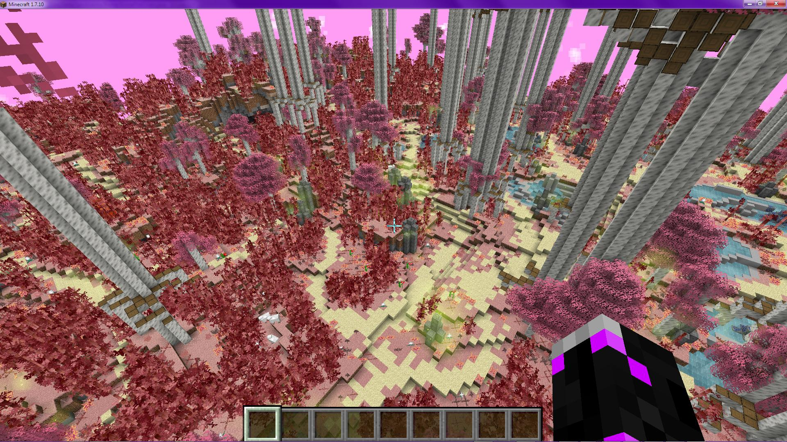
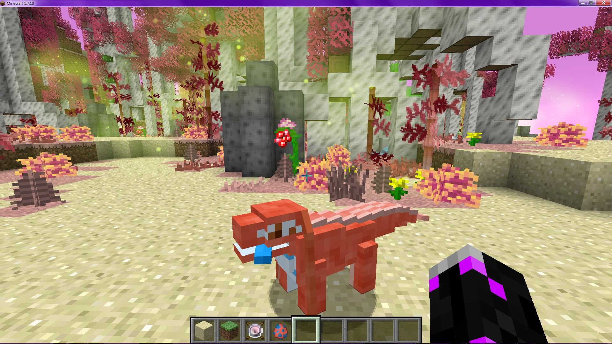
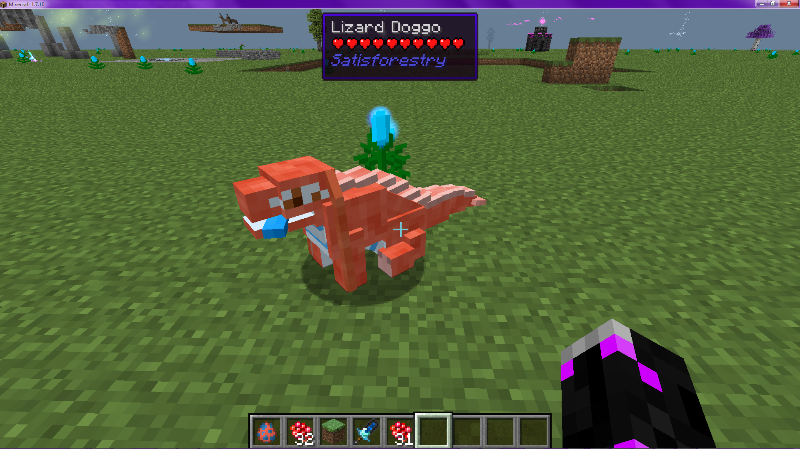

Overview
Satisforestry recreates the beautiful and memorable Pink Forest (usually called "Red Bamboo Fields" in official maps and discussions) at the center of the Satisfactory map. Unlike in that game, where the entire map was hand crafted, here it is a proper procedurally generated biome, with seed-based randomization and ability to generate infinitely.I went to great lengths to reproduce as many of the defining characteristics of the biome as I could, from the foliage - large and small - to the terrain shaping to the kinds of creatures you find in the biome. The dominant feature is of course the giant pink trees - these rise from the plateau to scrape the world height limit, and make the biome visible from an extremely large distance. Under the canopy of giant trees are smaller, thinner pink trees, as well as scatted patches of red bamboo. Running through the biome is a web of sandy paths, sometimes crossing or becoming small streams.
These streams ultimately run off the edge of the biome, forming giant waterfalls. Also found scattered around the biome are outcrops of dark stone, poison "holey" rocks, and paleberries.
Note that several of the biome features are dependent upon finding a biome edge, and as such you will not see all of them in a single-biome world like a MystCraft age with pages for just this biome.
Biome Regions
Just like the Satisfactory version, the Pink Birch Forest is split into three subzones; the main one, by far the most common, is the standard pink forest, with wide sandy paths and a mix of all foliage (except for the "Red Jungle" short and wide tree variant, with hanging vines). Within that you will find regions of a more swampy area, with terraced ponds, reproducing the similar area on the eastern edge of the SF biome. Finally, you will also find dense stands of red bamboo with comparatively few trees (including occasional Red Jungle trees), with narrow winding paths and numerous small cliffs, which replicate the area at the northwest of the SF biome.

All three biome zones in one picture.

Some red jungle trees.
Climate
The pink forest is designated with a unique climatic model - its ambient temperature is marked as between cool and cold - marginally above the freezing point of water - but the biome will receive snow instead of rain, and said snow will accumulate. However, aside from a window around Christmas time, when all the mods have the seasonal effects in place, this snow will melt again as soon as it is both daylight and sunny.Creatures
Spiders And Stingers
In the day, the Pink Forest will seem mostly the same as most other biomes, with one prominent exception: Spiders can spawn at any light level in this biome. This actually makes the biome somewhat safer during the day, as spiders are nonaggressive in daylight, and their spawns on the surface reduce available slots for mobs underground or in other dark locations. However, come nightfall, those spiders will turn aggressive, and will be joined by another variant, based on the green Elite Stinger from Satisfactory. Bright green and with fluorescent yellow highlights - and trailing more of the same - these share the stinger's ability to leap large distances, emit clouds of poison, and deal serious damage. They also somewhat larger, have nearly double the health, and are not passivated by light. Should you not only survive but manage to defeat one, they will drop notably better resources than a vanilla spider.Giant Flying Manta
However, not all the creatures in the biome are dangerous. Each region of pink forest will have a giant flying manta circling around it; aside from occasionally making noises, it can be ridden to receive a tour of the surrounding area.Lizard Doggo
Finally, and probably most popular, a few locations in the biome are marked as "Lizard Doggo Spawn Points", which will generate wild lizard doggo mobs. These will flee the player - unless holding paleberries, of course - and can be tamed. In addition to just being cute, tame doggos can occasionally find random items for the player - much the same as their SF counterparts.

A lizard doggo and the paleberry plant used to tame him.

A sitting doggo.
Buried Secrets
Like the pink forest in Satisfactory, there is a large tunnel system running under the biome, one which contains a "resource node", which can provide an inexhaustible - though not high-throughput - supply of whatever resource it is configured to. Just as with their Satisfactory counterparts, these resource nodes can occur in varying purity levels - Impure, Normal, and Pure - which influence both their yield and potentially what items they may provide. Of course, this is a moot point if you cannot find the node and put it to use, something that may not be quite so trivial...Configurability
Satisforestry makes extensive use of the LuaBlock system to define prototypes to dictate many behaviors. It ships with default configs, but these were not intended for serious play; they are not likely to be well-balanced or thematically appropriate, and were simply created to both provide the ability to use the mod as downloaded and to provide example definitions. These files are found inReika/Satisforestry_Files in the config folder.
This folder has four files:
example, ores, resources, and doggo. The first of these simply includes a sample value of each kind of prototypes (consisting of the combined content of the default values for the other three files), and is not meant to be edited. The other three files define the types and amounts of ores that will spawn within the biome and where they may spawn, what the resource nodes produce and how they produce it, and the random items lizard doggos can find and under what conditions.
Ore Configuration
An ore prototype defines one kind of ore, including what block(s) it generates with, and in which locations it can generate and with what amounts in each. Aside fromtype, only two tags are required. The first is the ore block definition, using either a single string value for block or a list of strings for blocks - for defining ore entries with a single or multiple ore blocks respectively. The second tag, spawnLocations, defines which of the predetermined locations where ore clusters may appear can select this ore entry and what modifiers to apply on the generation of this ore in this location. This tag is a list of tables, each of which defines three child values:| Definition Key | Description | Default Value |
|---|---|---|
| maxSize | Maximum cluster size (layers deep not block count) | 4 |
| sizeScale | Overall size multiplier | 1.0 |
| spawnWeight | Weighted Random spawn weight | 10 |
Resource Node Configuration
Node Definitions
The resource node prototype defines one "resource template" used for the resource nodes in the cave systems. Each node will be permanently assigned a single template of the available types at random - using standard weighted random behavior - upon generation; these templates dictate primarily what items that will produce and under what conditions, plus some additional parameters.| Definition Key | Description | Default Value |
|---|---|---|
| maxCount | Max yield (item count) per harvest cycle | 1 |
| minCount | Min yield (item count) per harvest cycle | 1 |
| renderColor | Node render color | 0xffffff |
| spawnWeight | Weighted Random spawn weight | 10 |
| effects | Ambient AoE effects around the node (Optional) | |
| outputItems | The yieldable items (weighted random) | |
| key | Item definition | |
| minimumPurity | Minimum node purity level to spawn this item | |
| weight | Weighted Random spawn weight | 10 |
| purityLevels | Purity level distribution (weighted random) | |
| IMPURE | Spawn weight for (impure) worst level | 10 |
| NORMAL | Spawn weight | 10 |
| PURE | Spawn weight for pure (best) level | 10 |
Effects
"Effects" are ambient AoE effects that will apply to players who approach the node, akin to the radiation effect emanating from Satisfactory uranium nodes. A number of predefined effect types are available, but you can also choose to invoke arbitrary mod functions (eg the one that triggers a ChromatiCraft pylon discharge at a player), or reference an effect defined in code and added via the Satisforestry API. This is chosen with the value of theeffectType parameter, which then controls what other parameters are necessary.| Effect Key | Description | Required parameters | Parameter descriptions |
|---|---|---|---|
| damage | Simple direct damage | ||
| amount | Damage dealt per cycle | ||
| rate | Ticks between cycles | ||
| potion | Apply potion effect | ||
| potionID | Potion effect ID | ||
| level | Effect level | ||
| reflective | Reflective invocation of any MC/mod java method | ||
| class | Qualified class name containing method | ||
| method | Method name | ||
| args | Method arguments (see below) | ||
| instance | Owner instance | ||
| custom | API-added code effect | ||
| effectName | Registered effect name (see below) |
Reflective Effects
Reflective invocation effects require a specification of the arguments the method requires, as well as (unless the method isstatic) the instance object on which to call it. Method arguments are specified as a list of method argument IDs, while the instance - if any - is a single value. The available options for arguments are:
| Argument Type ID Key | Description |
|---|---|
| player | The nearby player entity |
| world | The world the player and node are in |
| x | The player's X position (rounded to the nearest block) |
| y | The player's Y position (rounded to the nearest block) |
| z | The player's Z position (rounded to the nearest block) |
| tile | The node tile entity |
Custom Effects
Custom effects are defined in Java code by another mod, and registered via the SF API. To define a custom effect, create an object implementing theNodeEffectCallback interface, and register it with registerCustomNodeEffect(String name, NodeEffectCallback eff) in the API's resourceNodeHandler access point. The method apply(TileEntity node, EntityPlayer ep) is called every tick for every player near the node with this effect, and you can perform any arbitrary effect you desire.
Lizard Doggo Configuration
Doggo Definitions
Lizard doggo prototypes define what items tamed Lizard Doggos can find, including conditional requirements for that specific item type. There is only one top-level key,findableItems, which is a list of subblocks, each corresponding to a given findable item, defining the appropriate values:| Definition Key | Description | Default Value |
|---|---|---|
| key | Item Definition | |
| nbt | NBT tag definition (Optional) | |
| minCount | Minimum item count per fetch cycle | 1 |
| maxCount | Maximum item count per fetch cycle | 1 |
| weight | Weighted Random spawn weight | 10 |
| weightFactors | Conditionally-applied multipliers to weight (Optional) | |
| check | Condition identifier | |
| value | Value to check condition against | |
| factor | Multiplier if check succeeds | |
| limits | Requirements to allow this item to be found (Optional) | |
| check | Condition identifier | |
| value | Value to check condition against |
Conditions
Weight factors and limitations both use a condition/check system, where each entry is defined as checking some property about the game state, such as the time of day or the doggo's health. These are compared against a provided value - the actual comparison depends on the condition being queried - yielding a true/false result which determines whether the weight factor is applied or the limitation is satisfied. In the case of the latter, all limitations must be satisfied to allow that item to be found by a lizard doggo. The available checks is as follows:| Check ID Key | Description |
|---|---|
| is_night | Is it currently nighttime? |
| biome_id | Is the doggo is currently in this biome ID? |
| health | Is the doggo health at least this amount (fraction out of 1)? |
| min_y | Is the doggo at or above this Y level? |
| max_y | Is the doggo at or below this Y level? |
| is_peaceful | Is the difficulty on "Peaceful" mode? |
| has_sky | Can the doggo see the sky right now? |
Configuration Settings
This mod contains several config options to modify values and behaviors - such as for balance or server safety concerns, or simply personal taste - to your preferences. Note that several settings may have bounds imposed on their values, either logically or explicitly; these can usually be seen in the actual settings files or ingame. These are listed in order found in the source code, which is generally the order in which they were added; They may be present in a different order ingame or in the configuration files.Pink Forest Biome ID
Type: intCurrent Default Value:
144
Enable Simple Automation for Resource Node
Type: booleanCurrent Default Value:
false
Cave Mob Spawn Multiplier
Type: intCurrent Default Value:
1